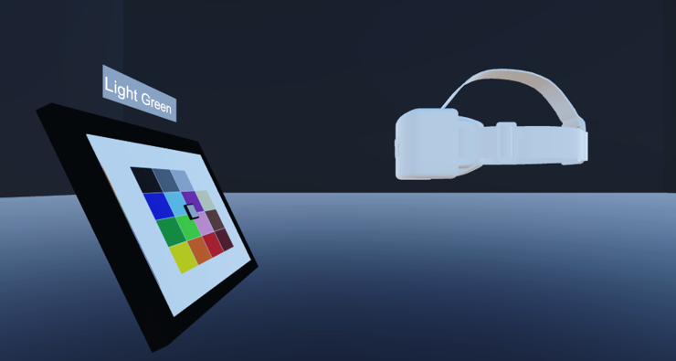
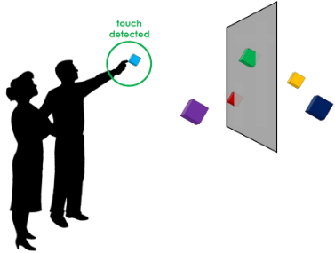
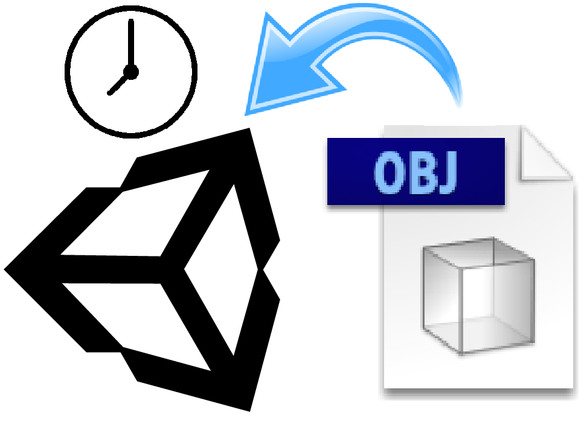
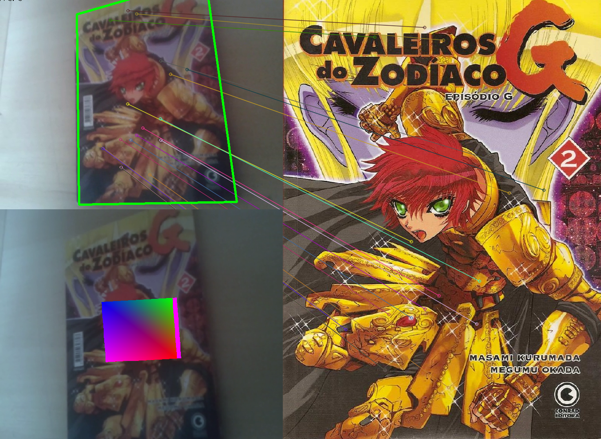
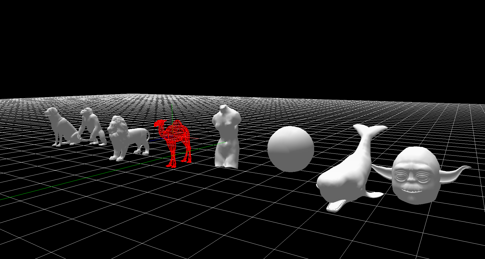

Eduardo Rodrigues

Address
São Paulo/SP - Brazil
Contact
Email: eduardohmrodrigues@gmail.com
Bachelor degree in Computer Science at the Informatics Center of Federal University of Pernambuco (CIn - UFPE). Currently I'm working with the development and maintenance of services, applications and systems as a Backend Engineer at Inloco. During my undergraduate education I had a large experience with academic research at the Voxar Labs under the supervision of Prof. Veronica Teichrieb. My research include the study of mixed reality, virtual reality, augmented reality, human-computer interaction, natural interaction, multitarget tracking and computer vision.
Interests
- Microservices
- Games
- Human-Computer Interaction
- Mixed Reality
- Computer Vision
- Multitarget Tracking
- Challenges
Professional Experience
Inloco (Jan. 2020 - current job)
- Backend Engineer: Development and maintenance of backend applications, services and systems of the company
Wildlife Studios (Aug. 2018 - Oct. 2019)
- Game Engineer: Game developer at the largest mobile gaming company in Latin America, and one of the largest in the world
- C#/Unity3D/Node.js/Javascript
Voxar Labs (Aug. 2015 - Jul. 2018)
- Researcher: Academic research and software development focused in mixed reality, virtual reality, augmented reality, human-computer interaction, natural interaction, multitarget tracking and computer vision
- C/C++/C#/Objective-C/OpenCV/OpenGL/Unity3D/Python/Javascript
Suati (Aug. 2015 - Feb. 2016)
- Software Engineer Intern: Refactoring of the data layer code and implementation of new features on the company's major product
- C#/SQL/HTML/CSS
Young Talents for Science - CAPES (Mar. 2015 - Mar. 2016)
- Junior Researcher: Academic research program where I created a computer vision algorithm using openCV to count bat populations based on a statistical approach
- C/C++/OpenCV/CVBlob
Research and Development
Voxar Shift
- Researcher/Software Engineer: Project focused on create products on top of research technologies
- Objective-C/C/C++
Samsung
- Researcher/Software Engineer: Object tracking and movement tracking research using computer vision algorithms
- C/C++/OpenCV
Voxar Labs
- Researcher/Software Engineer: Mixed Reality interaction interface for consumer TVs
- C#/Unity3D
SimplifiqueGP
- Software Engineer: Multiplatform 3D rendering for engineering
- C/C++/C#/Objective-C/OpenGL/OpenSceneGraph
Voxar Labs
- Researcher/Software Engineer: Multitarget tracking research focused on tracking and counting bat populations
- C/C++/OpenCV/OpenGL/ThreeJS/D3/Python
Publications
Technical Skills
Programming Languages
- C# (3 years)
- Javascript and Node.js (1 year)
- C/C++ (2 years)
- Objective-C (6 months)
- Python (6 months)
Applications
- Unity Engine
- Git
- Rider
- Visual Studio
- Xcode
- Terminal
Tools/Libraries
- OpenCV
- OpenGL
Projects


A Comparative Evaluation of Direct Hand and Wand Interactions on Consumer Devices
This work evaluates the use of two input techniques for VR applications: wands and hands. Experiments were performed using consumer devices (Leap Motion Controller and HTC Vive), aiming at understanding how popular hardware respond to users' needs. Five distinct scenarios were tested, exploring both near and far object interaction. The evaluation was divided into three steps: user profile evaluation, system performance evaluation, and System Usability Scale questionnaire. The results showed that even with a lower task accuracy, natural interaction provided by using a hand representation on the virtual world gained user's preference when interacting with virtual elements that were close to user. For distant object interaction, it still needs some improvements.

ARGo
An augmented reality framework that makes the creation process of an AR application easier then never, avoiding the need of deep knowledge in computer graphics, focusing only on content creation with just a few lines of code.
Mixed Reality TVs
This project was fully written in C# using the Unity Engine with the Kinect SDK. This project address the interactivity with Smart TVs by using body gestures combined with the visualization modification through the Motion Parallax effect. This application is capable to fully calibrate the TV virtual environment with the real world, so the TV becomes a Mixed Reality display, showing its content coupled with the real world providing the user a new set of interaction techniques such as visually pinpoint and touch the virtual items of a TV menu by using metaphors based on natural physical interactions such as collisions, lights, shadows and magnetic attractions.
UnityRTGI
A Unity Engine project where the user can import .obj extension files (local or online) during execution time without the need of compiling the asset with the project.
S.i.R.A.C

This project is a computer vision algorithm that track bats in a clutter environment from a thermal image to account the population of their colony. After track the bats the algorithm generates a text file that is loaded by a 3D viewer that reconstructs all the scene in a 3D environment in order to help the analysis of the tracked flights by researchers in areas like biodiversity and biology.
MONO

This project was written in C# using the Unity Engine to a hackaton competition. It is a puzzle/platform game where the player changes the world colors between black and white to solve the puzzles and advance in the history. This game presents his own identity by having a simple mechanic and a minimalist design, and this combination was the key to make this game so unique and to give to all players some hours of fun, even in the alpha version.
x:pression

This project was fully written in C++11, using the CLM-framework to VR/AR course at CIn UFPE. This project is a computer vision algorithm that makes a real time tracking of the user's face and detect the user's actual emotion based on the extracted features. It was my first experience with a face detection algorithm.
Features Extractor
This project was fully written in C++11, using the OpenCV and OpenGL libraries to the Computer Graphics course at CIn UFPE. It is a computer vision algorithm using OpenCV library that tracks a given texture on a web cam image and render a 3D object on the texture surface.
3D Render
This project was fully written in C++11, using the OpenGL library to the Computer Graphics course at CIn UFPE. It is a computer graphics algorithm that read .obj files and create 3D scenes with all loaded objects rendered.
SimplifiqueGP
Multiplatform 3D rendering for engineering
Teaching
-
Teaching Assistant - Linear Algebra for Computation
(August 2014 to December 2014) -
Teaching Assistant - Programming Introduction
(January 2014 to June 2014)

|

|
|

|

|

|
|---|